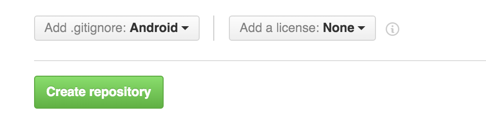

Teach 2.0 :: Your First Android App
Objectives
Create your first Android project.
Learn some of the basics of java.
Assignment
Before continuing, you should have completed this week's preparation assignment.
You're going to create a basic Android application
Part I: Prepare a git repository
-
Create a new repository on GitHub to store your homework in. When you create the repository, before clicking the Create Repository button, be sure to set the gitignore file to "Android". This will add a file to your git repo that tells git to ignore files related to Android development that shouldn't be shared between developers.
 -
Clone this repository to your local computer. This will be the folder you'll use to store your Android Studio projects in.
Part II: Create an Android Project
-
Follow this tutorial from Google to create your Android project.
Make sure you save your project in a sub folder in your git repo you created.
-
Follow this tutorial from Google to run your application. Ignore the parts about running the app from the command line, just follow the instructions relevent for Android Studio.
-
Follow this tutorial from Google to learn how to add a simple user interface to your app.
Congratulations! You now know how to create and run simple Android apps.
Make sure to complete the accompanying quiz for this assignment on I-Learn.